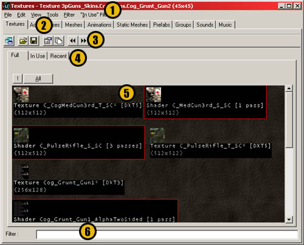
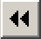

UDN
Search public documentation:
TextureBrowserReferenceKR
English Translation
日本語訳
Interested in the Unreal Engine?
Visit the Unreal Technology site.
Looking for jobs and company info?
Check out the Epic games site.
Questions about support via UDN?
Contact the UDN Staff
日本語訳
Interested in the Unreal Engine?
Visit the Unreal Technology site.
Looking for jobs and company info?
Check out the Epic games site.
Questions about support via UDN?
Contact the UDN Staff
텍스처 브라우저 및 UTX 애니메이션 패키지 사용하기
문서 요약: 텍스처 브라우저 및 .UTX 패키지 가져오기에 대한 포괄적인 참조. 문서 변경 내역: 마지막 업데이트 Tom Lin(DemiurgeStudios?), 콘텐츠 작성. 원저자: Tom Lin(DemiurgeStudios?)- 텍스처 브라우저 및 UTX 애니메이션 패키지 사용하기
- 개요
- 브라우저 레이아웃
- 풀다운 메뉴
- 파일 (File)
- 편집 (Edit)
- 속성 (Properties) (마우스 오른쪽 버튼 클릭)
- 복제 (Duplicate) (마우스 오른쪽 버튼 클릭)
- 이름 변경 (Rename) (마우스 오른쪽 버튼 클릭)
- 레벨에서 제거 (Remove from Level) (마우스 오른쪽 버튼 클릭)
- Cull 사용하지 않는 텍스처 (Cull Unused Textures)
- 전체 패키기 로드 (Load Entire Package)
- Detail Hack (마우스 오른쪽 버튼 클릭)
- 텍스처 교체 (Replace Textures)
- 이전 (Previous)/다음 그룹 (Next Group)
- 삭제 (Delete) (마우스 오른쪽 버튼 클릭)
- 보기 (View)
- 도구 (Tools)
- 필터 (Filter)
- “사용 중” 필터 ("In Use" Filter)
- 도구 모음 버튼 (Toolbar Buttons)
- 탭
- 이름 필터 (Name Filter)
개요
.UTX 파일은 텍스처(결합기 및 쉐이더 등)에서 추출된 파일 및 텍스처 그룹을 위한 리포지토리입니다. 이 파일을 위한 브라우저는 단순히 저장하는 것 이상의 기능이 있고, 알파 채널, 패닝 등의 작업을 할 수 있게 하여줍니다. 특히 텍스처 아티스트는 쉐이더 제작자도 마찬가지로 텍스처 브라우저에 상당한 시간을 할애하고 있습니다.브라우저 레이아웃

- 1: 풀다운 메뉴. 이것은 버튼들을 기능을 중복하고 때로는 확장합니다.
- 2: 브라우저 탭. 물론 텍스처 가 선택되야 합니다.
- 3: 도구 모음 버튼. 중점적으로 사용되는 기능이 여기에 배치됩니다.
- 4: 탭. 패키지 관리 탭/버튼.
- 5: 메인 텍스처 표시 창.
- 6: 현재 문서를 위한 이름 필터.
풀다운 메뉴
파일 (File)
가져오기 (Import)
추가 텍스처를 패키지에 추가할 수 있게 하여줍니다.
- Package (패키지): 가져올 패키지의 이름입니다.
- Group (그룹): 텍스처가 분류되는 패키지내의 그룹입니다. 그룹을 원하지 않는 경우 이 필드는 공백으로 둘 수 있습니다.
- Name (이름): 텍스처에 주어진 이름입니다. 가져오기한 텍스처 파일 이름은 가져오기 시 변경될 수 있음에 유의하십시오.
- Masked (마스크): 이 체크상자는 작동하지 않는 것처럼 보입니다. 텍스처의 알파/마스크 속성을 변경하려면 속성 영역에서 실행해야 합니다.
- Generate MipMaps (Mip 맵 생성): 이것은 기본적으로 선택됩니다. 이것은 텍스처를 먼 거리에서 희미하게 만들기 때문에 텍스처의 아티팩트는 덜 막여해 보입니다.
- Detail Hack?: 디테일 텍스처를 생성하는 경우 이 옵션을 선택되야 합니다.
내보내기 (Export) (마우스 오른쪽 버튼 클릭)
이것은 작동하지 않습니다. 이 옵션은 텍스처를 마우스 오른쪽 버튼으로 클릭한 경우에도 나타납니다.편집 (Edit)
속성 (Properties) (마우스 오른쪽 버튼 클릭)
이는 텍스처 속성 창이 나타나게 하고 버튼의 기능을 복제합니다.복제 (Duplicate) (마우스 오른쪽 버튼 클릭)
이는 텍스처의 다른 복사본을 만듭니다. 이 옵션을 선택하면 새 패키지 및 그룹을 만들고 텍스처의 이름을 변경할 수 있는 능력이 부여됩니다. 또한 이 사본을 기존 패키지에 포함시킬 수 있습니다. 전체 패키지를 로드했는지 확인하십시오.이름 변경 (Rename) (마우스 오른쪽 버튼 클릭)
이렇게 하면 선택한 텍스처를 새 패키지 또는 새 그룹으로 이동시킬 수 있습니다. 또한 텍스처의 이름을 변경시킬 수 있게 합니다.레벨에서 제거 (Remove from Level) (마우스 오른쪽 버튼 클릭)
이 텍스처가 적용된 레벨에 있는 모든 BSP 에서 텍스처를 제거합니다.Cull 사용하지 않는 텍스처 (Cull Unused Textures)
레벨이 저장될 때 모든 뒷면을 향하는 텍스처는 삭제됩니다. 이러한 텍스처는 플레이어에게 보이지 않지만 cull 되지 않으면 로드되어 메모리만 허비합니다.전체 패키기 로드 (Load Entire Package)
패키지의 모든 텍스처를 브라우저로 로드합니다. 이 기능은 버튼에 복제됩니다.Detail Hack (마우스 오른쪽 버튼 클릭)
패키지에 있는 기존의 텍스처로부터 디테일 텍스처를 생성하는 경우 경고 창이 나타납니다. 이 과정은 텍스처에 대해 mip 맵을 변경시키고 실행 취소될 수 없습니다.텍스처 교체 (Replace Textures)
세계에 있는 텍스처를 바꾸고 다른 지정된 텍스처로 교체합니다. 작동하지 않는 것처럼 보입니다.이전 (Previous)/다음 그룹 (Next Group)
그룹 사이를 이동합니다. 버튼 기능을 복제합니다.삭제 (Delete) (마우스 오른쪽 버튼 클릭)
패키지에서 텍스처를 완전히 삭제합니다.보기 (View)
편리상 텍스처를 다른 스케일로 볼 수 있게 하여줍니다.도구 (Tools)
압축 (Compression) (R): 텍스처에 적용되는 DirectX 텍스처 압축 레벨을 변경시킬 수 있게 하여줍니다. 적어도 이론상. 작동하지 않나요?필터 (Filter)
이것은 패키지에 있는 재질의 다른 유형의 선택적으로 표시하게 하여줍니다.“사용 중” 필터 ("In Use" Filter)
이것은 다른 레벨 유형의 기하도형에 적용되는 텍스처를 선택적으로 표시할 수 있게 하여줍니다. 이 결과를 보려면 메인 텍스처 창의 "사용 중"탭에 반드시 있어야 합니다.도구 모음 버튼 (Toolbar Buttons)
 이러한 버튼은 보통 풀다운 메뉴로부터 몇 가지 흔히 사용되는 기능을 가집니다.
이러한 버튼은 보통 풀다운 메뉴로부터 몇 가지 흔히 사용되는 기능을 가집니다.
패키지 열기 (Open Package)
.UTX 패키지가 아직 패키지의 드롭 다운 목록에 로드되지 않은 경우 이 버튼을 사용하여 열 수 있습니다.패키지 저장 (Save Package)
이름 그대로입니다. 패키지를 변경하려면 반드시 저장하십시오. 편집기에서 레벨을 실행하기 전에 저장하지 않는 자주 하는 실수입니다.텍스처 속성 (Texture Properties)
 속성 버튼을 클릭하면 텍스처 속성 창이 나타납니다.
속성 버튼을 클릭하면 텍스처 속성 창이 나타납니다.
버튼
이에 대해서는 다른 문서에서 다루어졌습니다. 좀 더 자세한 내용은 재질 튜토리얼 을 참조해 주십시오.애니메이션
이러한 속성은 텍스처를 사용한 애니메이션 생성을 제어합니다. 텍스처 애니메이션은 순환하는 일련의 텍스처입니다. 각 텍스처는 애니메이션의 다음 프레임인 "AnimNext (다음 애니메이션)" 텍스처를 정의합니다.AnimNext (다음 애니메이션)
다음으로 재생되는 애니메이션의 다음 프레임인 텍스처입니다.MaxFrameRate (최대 프레임 속도)
1초당 프레임 수로 애니메이션이 재생되는 최고 속도입니다.MinFramRate (최소 프레임 속도)
1초당 프레임 수로 애니메이션이 재생되는 최저 속도입니다.PrimeCount (프라임 카운트)
애니메이션이 시작되는 지점에서의 텍스처 애니메이션의 프레임 수. 예를 들면, 15 프레임의 애니메이션에서 만약 PrimeCount 가 5 로 설정되면 프레임 5 에서 재생이 시작됩니다. 이 기능은 모든 애니메이션 텍스처에서 작동합니다.재질
FallbackMaterial (대체 재질)
비디오 카드가 주 재질 효과를 지원하지 않는 경우에 대한 백업 재질입니다. 대체가 작동하도록 하려면 낮은 모델의 비디오 카드를 가지고 있는 것처럼 작동시키기 위해 편집기(메뉴) 및 게임(("renderemulate gf2" 콘솔 명령)에서 "Render Emulation" 을 선택할 수 있습니다. 대체를 지정하지 않으면 거품 텍스처로 대체됩니다. 이 섹션의 .UTX 브라우저는 다른 문서에서 다루어졌습니다. 좀 더 자세한 내용은 MaterialTutorial (재질 튜토리얼)을 참조해 주십시오.품질
bHighColorQuality
이것은 사용되지 않고 아무것도 하지 않습니다. 무시하십시오.bHighextureQuality
이것은 사용되지 않고 아무것도 하지 않습니다. 무시하십시오.표면
bAlphaTexture
텍스처가 8 비트 알파 채널 (256 단계의 투명도) 을 가진 경우 이것은 True 로 설정되야 합니다.bMasked
텍스처가 1 비트 알파 채널 (2 레벨의 투명도)을 가진 경우 이것이 True 로 설정되야 합니다. bAlphaTexture 과 bMasked 모두 동시에 True 로 설정될 수 있지만 텍스처는 마스크된 것처럼 처리된다는 것을 명심하십시오.bTwoSided
텍스처가 양 사이드에서 보이는 기하 형상에 적용되는 경우 (예: cape) 이를 True 로 설정하십시오. 이것을 사용하면 성능에 영향이 있으므로 무차별로 선택하지 않도록 주의하십시오.텍스처
디테일
이 필드는 텍스처를 "Detail Texture" 로 설정할 수 있게 하여줍니다. 이것은 기존의 텍스처에 위에 놓아지게 되는 변경자 레이어입니다. 표면에 근접하는 경우에만 표시되고, 가까이에서 볼 때 텍스처가 더 복잡하게 보이는 데 도움이 됩니다. 이것은 알파 채널이 아니라 텍스처의 RGB 레이어를 사용합니다.디테일 스케일
기본 Detail Scale 은 8 입니다. 이는 즉 부모 텍스처가 한 번 그려질 때마다 디테일 텍스처는 수직으로 8 회, 수평으로 8 회 그려지는 것을 의미합니다. 디테일 스케일을 부모 텍스처에 올바르게 설정하였는지 확인하십시오. 아마 부모 텍스처는 매우 작다면 그런 경우 부모의 인스턴스당 8x8 회 디테일 텍스처를 그리고 싶지 않을 수 있습니다.LODSet
이것은 텍스처에서 필터링을 제어하는 것을 목적으로 하는 것으로 사용자 정의가 가능합니다.NormalLOD
이 필드는 무시하십시오.팔레트 (Palette)
팔레트화된 (P8) 텍스처의 팔레트 객체입니다. 만질 필요가 없습니다. 염려하지 마십시오UClamp
반복되거나 고정되는 텍스처 크기.UClampMode
이것은 텍스처 감싸기(래핑)/반복이 가능한 여부를 설정합니다. X 축에서 작동합니다.VClamp
반복되거나 고정되는 텍스처 크기.VClampMode
이것은 텍스처 감싸기(래핑)/반복이 가능한 여부를 설정합니다. Y 축에서 작동합니다.TextureFormat
형식
이것은 텍스처의 저장된 압축 유형을 알려줍니다. 압축 유형 자세한 내용은 UnrealTexturing 문서를 참조하십시오.전체 패키지 로드
 텍스처 브라우저는 다소 때때로 직관적이지 않습니다. .UTX 패키지가 로드될 때 모든 패키지의 텍스처가 항상 표시되는 것은 아닙니다. 사용 중인 텍스처만이 표시됩니다. 패키지의 모든 텍스처를 표시하려면 이 버튼을 사용하십시오.
텍스처 브라우저는 다소 때때로 직관적이지 않습니다. .UTX 패키지가 로드될 때 모든 패키지의 텍스처가 항상 표시되는 것은 아닙니다. 사용 중인 텍스처만이 표시됩니다. 패키지의 모든 텍스처를 표시하려면 이 버튼을 사용하십시오.
이전 그룹

이것은 패키지에서 사용 가능한 그룹 전체를 역순으로 이동합니다. 또한 풀다운을 사용하여 그룹을 이동할 수 있습니다.다음 그룹
 이것은 패키지에서 사용 가능한 그룹 전체를 역순으로 검색합니다. 또한 풀다운을 사용하여 그룹을 이동할 수 있습니다.
이것은 패키지에서 사용 가능한 그룹 전체를 역순으로 검색합니다. 또한 풀다운을 사용하여 그룹을 이동할 수 있습니다.
탭
전체
현재 열려져 있는 텍스처 패키지의 모든 내용이 여기에 열립니다.패키지 이름 (Package Name)
이 패키지 필드는 개별 .UTX 파일(텍스처 패키지)을 참조합니다. 풀다운 목록을 사용하여 패키지 사이를 빠르게 탐색할 수 있습니다.그룹 이름 (Group Name)
텍스처를 .UTX 로 가져오기하면 .UTX 패키지내의 그룹에 지정하는 옵션이 주어집니다. 이것은 패키지를 좀 더 논리적으로 나눌 수 있게 하여줍니다. 같은 조직 레벨에 있는 모든 텍스처가 무질서하게 보이는 것과는 대조적이다.!
버튼 이것은 실시간 미리보기 버튼입니다. 이것은 텍스처의 베이스 레이어에 추가 레이어 효과를 동반한 텍스처의 결과를 볼 수 있게 하여줍니다. 예를 들면, 텍스처는 패너 (panner) 가 첨부되어 있을 수 있으며, 이는 브라우저에서 애니메이션화할 수 있게 하여줍니다.
이것은 실시간 미리보기 버튼입니다. 이것은 텍스처의 베이스 레이어에 추가 레이어 효과를 동반한 텍스처의 결과를 볼 수 있게 하여줍니다. 예를 들면, 텍스처는 패너 (panner) 가 첨부되어 있을 수 있으며, 이는 브라우저에서 애니메이션화할 수 있게 하여줍니다.